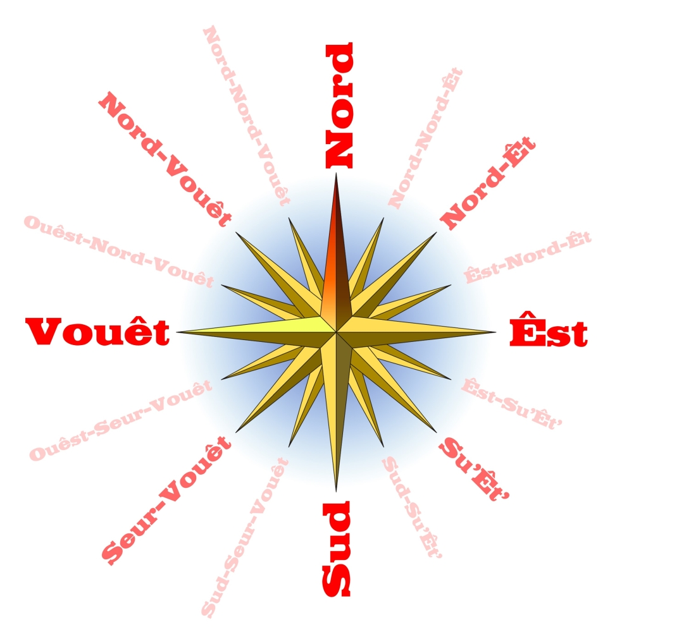
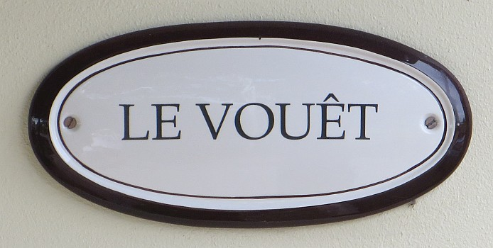

Les Pouaintes du Compas en Jèrriais
|
|
nord-nord-vouêt |
nord |
nord-nord-êt |
|
|
ouêst-nord-vouêt |
nord-vouêt |
nord-êt |
êst-nord-êt |
|
vouêt |
|
êst |
|
ouêst-seur-vouêt |
seur-vouêt |
sud |
su'êt' |
êst-su'-êt' |
|
sud-seur-vouêt |
sud-su'et' |
|

- À des bords dans l'Êst il' ont ieu bein pus d'plyie qu' nous aniet
- Au Pôle Nord
- changi d'deux quarts au ouêst
- Ches vents d'êst-chîn s'en vont enfraiduther nouos pouôrres patates; véthe, et il' enfraiduthent les gens étout
- Ch'est qu'i' n'y fait pas gras, à la tchête des falaises à coper d'la feûgiéthe, au vent d'nord-vouêt
- Chu sale vent-là n'aîse pas; nord-êt touos les jours
- comme bouais d'sèrvice lé rayon du Nord vaut mus que l'rayon du Sud
- Conter tout du Nord lé Sud
- Dans l'Êst il' ont des hangnes à lus cliavieaux, et il' appellent chenna lé hart
- Dans l'Ouêst nou dit des courts traits, pas d's avanchons
- Des vents d'Vouêt
- Eune forte brise du seur-vouêt
- Eune ramée d'héthondes prêtes à s'en r'aller sud
- Eune tempête du nord-vouêt
- Faithe la course par lé nord-vouêt
- Faithe route au Nord
- Filer Nord, en mé
- filer nord-vouêt
- I' n'sait pon où'est tch'est l'Êtaile du Nord!
- i' pend au Nord
- I' t'lî foutit un nord-êt
- i' vente du nord-vouêt
- Il est comme lé gabé à Gabeldu, tchi mèrque Nord quand l'vent est Sud
- J'ai du halître quand l'vent veint à l'êst; j'ai la chai courte
- Lé gabé mèrque Ouêst, mais la fliaue veint du Sud
- Lé gabé mèrque Vouêt, mais la fliaue veint du Sud
- Lé vent d'Êst-là vouos scie
- Lé vent d'Nord-vouêt est souvent un ravageux au r'nouvé
- Lé vent est au Nord
- Lé vent est du ouêt, achteu
- Lé vent est Seur-vouêt; jé crai qu' j'éthons d'la plyie
- Lé vent hale au Nord
- Lé vent hale Nord
- L'êtrangliément des récoltes par les vents d'êst
- La côte du Nord dé l'île est tchiquechose dé raide bé
- La dgilhouette a bésoin d'graisse; ou mèrque Nord et l'vent est du Sud
- L'affaithe sé dêchithe dans l'vouêt - i' s'en va faithe bé, j'crai
- Les ânes braient, j'éthons des vents d'vièrs lé nord
- Les patates pathaissent aver batchulé ches jours, des vents d'Êst
- Les vents d'Êst sont traîtres
- Les vents d'nord-vouêt s'en vont r'sétchi la tèrre
- L'temps s'èrempêque dans l'Sud
- Nou s'en va halîtrer, d'chu temps-lo; tchi vents d'Êst touos les jours
- Prendre l'Nord pouor lé Sud
- Quand l'vent est Nord, lé paîsson n'prend pas l'ain
- S'encafoter comme si nou s'n allait au Pôle Nord
- S'i' y'a gros comme un cliu d'braies d'bliu dans l'Ouêst, ch'est sîngne dé bé
- Y'a assez d'bliu dans l'Ouêst pouor faithe eune cheintuthe dé braies à Tam Luce
- Y'a eune ôrage tchi s'lève dans l'Êst
- Y'a eune cliairté dans l'su'êt' à ces sé; ah véthe, ch'est la lueu d'la ville
- Y'a un baûtchet d'pendu dans l'Ouêst; véthe, y'en a un baûtchet d'pendu là
- y'a un clièrgeon dans l'Seur-vouêt
- Y'avait tout un commerce d'hîtres en Jèrri aut'fais, dans l'Êst

Viyiz étout: